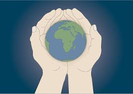

Bærekraft og Samfunnsansvar: 
Behovet for bærekraftige og miljøvennlige løsninger innen byutvikling øker stadig, samtidig er det fortsatt viktig å sørge for trygghet og trivsel for innbyggerne i byen. Det er fokus på å finne løsninger som tar hensyn til alle innbyggere uavhengig av bakgrunn, behov eller livssituasjon.
Transport:
Vi ser etter bærekraftige og samfunnsansvarlige løsninger for å utvikle mobilitet og transport her i Bergen. For å få til dette vil vi gjøre det mer gunstig for folket å nytte offentlig transport som til dømes busser og bybane, dette vil vi gjøre fordi det minker biler på veien og dermed fjerner CO2 utslippet disse ville hatt. Den offentlige transporten i Bergen er elektrisk og derfor mye mindre skadelig for miljøet. Vi vil også oppfordre flest mulig til å bruke enten el-biler eller hybrid da dette også kan minke CO2 utslipp. Noen av måtene vi vil oppfordre til å velge el-bil er for eksempel lavere priser på bompenger og parkering. Vi håper også at regjeringen innfører strengere utslippskrav og reguleringer for kjøretøy i den nære fremtiden. Vi hos HVLtopia jobber også hardt for å bygge flere ladestasjoner som nytter fornybar energi rundt hele Bergen. muligheten til å bygge ladestasjoner som bruker fornybar energi som f.eks sol eller vindkraft.
Helseaspektet: 
HVLtopia ønsker å få siker tilgang til kvalitetshelsetjenester for alle samfunnsgrupper, uavhengig av økonomisk status. Vi vil informere og utdanne innbyggerne om sunn livsstil, kosthold og fysisk aktivitet som kan bidra til forebygging av sykdommer. Vi hos HVLtopia oppfordrer til regelmessige helsesjekker som kan bidra til tidlig oppdagelse av sykdommer og dermed bedre behandlingsresultater. Forskning på helseeffekter av miljøfaktorer for å forstå hvordan ulike miljøfaktorer påvirker helsen, kan hjelpe til med å utvikle bedre retningslinjer og politikk. Forskning på nye behandlingsmetoder og teknologier kan forbedre pasientbehandlingen og gjøre helsesystemet mer effektivt.
Energi og Miljø:
Vi vil implementere fornybare energikilder som for eksempel solenergi, vindenergi og vannenergi så mange steder i Bergen vi har mulighet til. Vi ønsker også Implementering av energieffektive løsninger i bygninger, som isolasjon, LED-belysning og smarte energistyringssystemer, kan redusere energiforbruket betydelig. Vi forsker på ny teknologi og prosesser som kan forbedre energibruken i industrien, redusere kostnader og utslipp. Gjennom et samarbeid med regjeringen ønsker vi å iverksette lover og reguleringer som fremmer bruk av fornybar energi, energibesparelse og beskyttelse av miljøet. Vi håper også regjeringen kan gi økonomiske insentiver for både bedrifter og husholdninger for å oppmuntre til investering i bærekraftige energiløsninger.